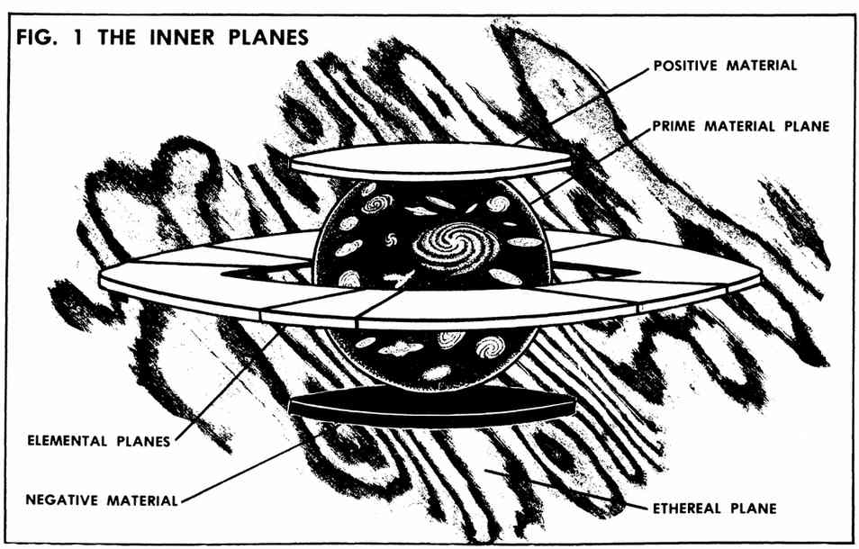
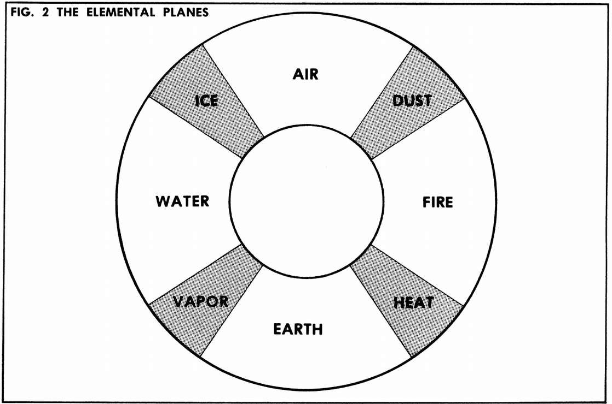
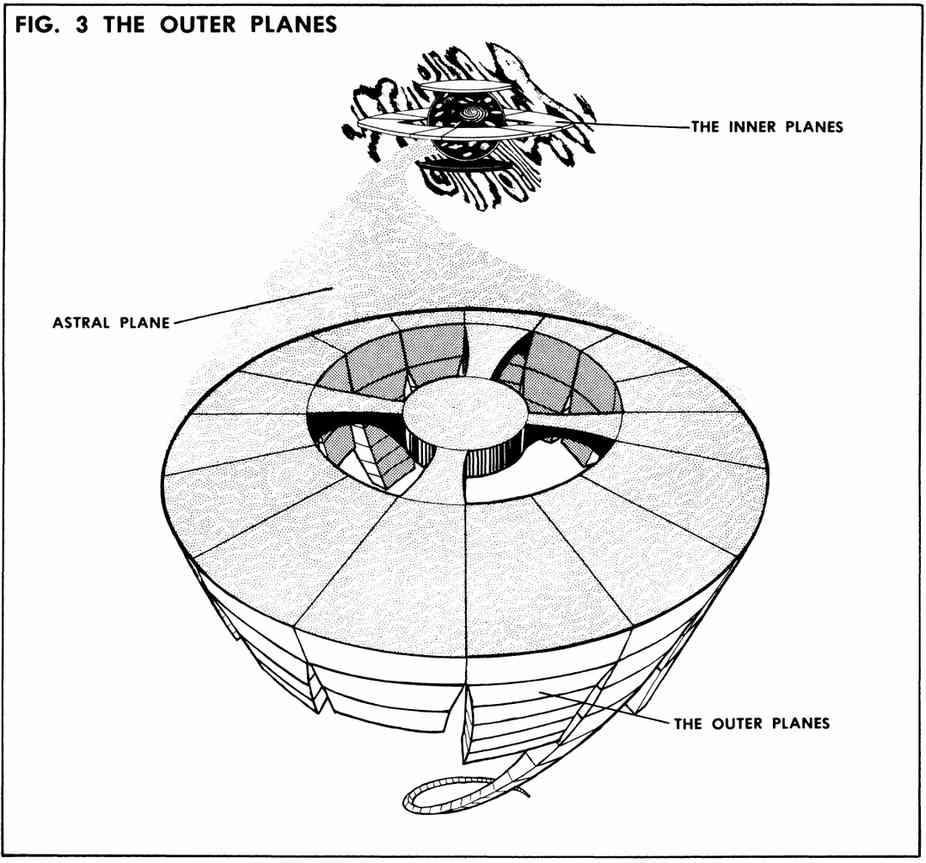
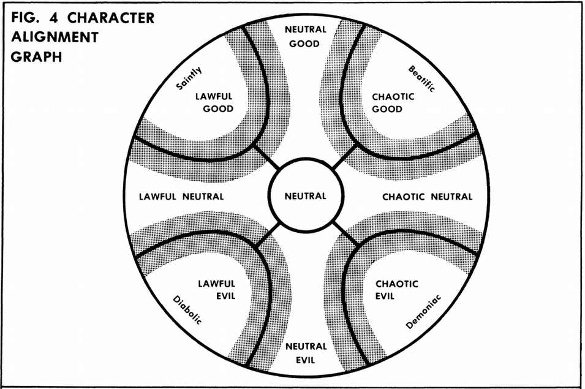
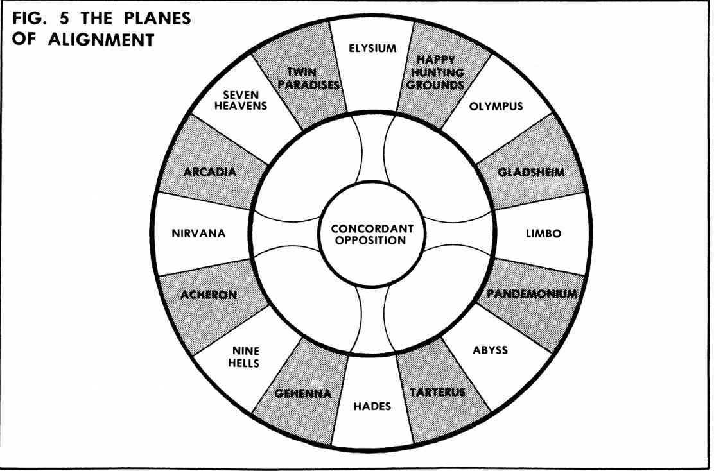

附录一：已知位面 · Appendix 1: Known Planes
在《高级龙与地下城》奇幻的“多元宇宙”中，存在无限多个平行宇宙和存在位面。所有这些“世界”都同时存在，但每个世界究竟有多么“真实”，完全取决于各个战役主持人的设定。以下图示和说明只展示与正常存在位面相联系的各个位面。图中没有画出平行宇宙，而这些宇宙究竟是否真实存在，也未必有定论。
内层位面 The Inner Planes
主物质位面 The Prime Material Plane
主物质位面（又称物理位面，Physical Plane）位于内层位面的“中心”。它容纳了宇宙及其所有平行宇宙。地球所在的位面就是主物质位面，而你的战役也很可能发生于此。所有内层位面及星界位面都构成主物质位面的边界，或渗透其中。主物质位面由四种元素以及正能量、负能量组成。
正物质位面 The Positive Material Plane
这里充满能量与光，是许多生命力和活力的来源，也是善的力量之源。来自主物质位面的生物若试图进入正物质位面（例如经由以太位面进入），很可能立刻被那里强大的能量吞噬。
负物质位面 The Negative Material Plane
这里充满反物质和负向力量，是不死生物的力量来源，也是邪恶滋长的能量领域。没有人确知负物质位面（或正物质位面）上可能存在什么生物。来自主物质位面的任何生物，很可能都会被彻底吸干生命与能量。
元素位面 The Elemental Planes
气、土、火、水四个元素位面“环绕”主物质位面。图 1 展示了理解它们彼此之间以及与其他内层位面之间关系的一种方式。环绕主物质位面的带状区域代表元素位面。不要被图 1 中各个位面的表观大小误导：平行的主物质位面有无限多个，每一个都以元素位面为边界，因此元素位面本身实际上也是无限的。图 2 展示了理解元素位面彼此关系的一种方式。穿过准元素位面，就能以肉身从一个元素位面移动到另一个元素位面。
元素位面是许多种元素生物的家园，其中一些具有前往主物质位面的能力。主物质位面与元素位面之间的往来，可能比其他任何位面之间都要频繁。这些旅行通常采用直接通行的方式（通过传送门或召唤），或经由以太位面进行。主物质位面的偏远隐蔽之处，也有直接通往元素位面的连接点。这些连接点最可能出现在最深的海洋中（通往水元素位面）、高空大气中（通往气元素位面）、地底深处（通往土元素位面），或活火山内（通往火元素位面）。偶尔也会形成临时连接点，例如熊熊燃烧的森林大火中央，可能出现通往火元素位面的开口。
准元素位面 The Para-Elemental Planes
元素位面交会的地方，就是较次要的准元素位面。这些位面包括：
- 冰位面（Plane of Ice）：气与水的交会处。
- 尘位面（Plane of Dust）：气与火的交会处。
- 热位面（Plane of Heat）：火与土的交会处，即熔岩。
- 汽位面（Plane of Vapor）：土与水的交会处。
这些位面是许多准元素生物的家园，可以用前往元素位面的相同方式抵达。
图 1：内层位面 The Inner Planes

图中标注：正物质位面（Positive Material）、主物质位面（Prime Material Plane）、元素位面（Elemental Planes）、负物质位面（Negative Material）、以太位面（Ethereal Plane）。
图 2：元素位面 The Elemental Planes

图中沿环形自上方顺时针排列：气（Air）、尘（Dust）、火（Fire）、热（Heat）、土（Earth）、汽（Vapor）、水（Water）、冰（Ice）。
以太位面 The Ethereal Plane
以太位面环绕、接触并渗透所有内层位面，以及宇宙中无穷无尽的平行世界，却并不是这些世界的一部分。以太位面基本上没有实体，真正生活在那里的“实在”生物很少；不过，据传有由固态以太构成的浮岛在以太位面漂流，岛上住着流放者。对以太位面上的生物而言，主物质位面（或任何内层位面）中的物体，看起来都是没有实体的幻影。以太生物可以毫无困难地穿过这些幻影，不过，被“穿过”的人可能会感到背脊发凉。然而，以太生物和物体对彼此来说都是“实在”的。请注意，以太位面并不延伸到外层位面，因此外层位面上的生物无法“进入以太状态”。以太旅行和战斗将在后文说明。
阴影位面 The Plane of Shadow
阴影位面与主物质位面同时存在，是主物质位面与正物质位面、负物质位面相互作用的结果。负物质位面提供黑暗，正物质位面提供光；光与暗在主物质位面相遇，主物质位面便投下了阴影。因此，阴影位面充满扭曲多变的阴影生物，有白、有黑，也有各种深浅的灰色。
外层位面 The Outer Planes
星界位面 The Astral Plane
这个位面从主物质位面延伸至一片非空间，其中无尽的漩涡盘旋，通往平行的主物质位面，也通往外层位面。借助星界位面，可以前往遥远的世界、平行位面，或外层位面本身。请注意，星界位面只接触每个外层位面的最上层；至于内层位面，它只接触主物质位面，见图 3。星界旅行和战斗将在后文说明。
外层阵营位面 The Outer Planes of Alignment
这些位面是诸神的家园，也是阵营（宗教、哲学及伦理理念）的来源。阵营与外层位面之间有着准确的对应关系。图 4 和图 5 能帮助读者更清楚地理解这种关系。请注意，角色阵营图上的阵营位置，与相同阵营的外层位面完全对应。基本阵营有九种，对应九个位面。此外，在这九个位面之间，还有代表“边界”阵营的八个位面。
如图 4 所示，阵营存在程度上的差异，而非绝对的界定。因此，一个倾向中立邪恶的守序邪恶角色，最终很可能会前往焦炎地狱，而不是冥界或九层地狱。十七个外层位面如下：
- 七重天堂（Seven Heavens）：绝对的守序善良。
- 双生天堂（Twin Paradises）：守序／中立善良。
- 极乐境（Elysium）的各层：中立善良。
- 欢乐狩猎场（Happy Hunting Grounds）：混乱／中立善良。
- 奥林匹斯（Olympus）的各层：绝对的混乱善良。
- 格拉兹海姆（Gladsheim）的各层（阿斯加德、华纳海姆等）：偏中立／善良的混乱。
- 混沌海（Limbo）的各层：中立的、绝对的混乱。
- 喧嚣空隧（Pandemonium）的各层：偏中立／邪恶的混乱。
- 无底深渊（Abyss）的 666 层：绝对的混乱邪恶。
- 塔耳塔洛斯（Tarterus）的各层：中立／混乱邪恶。
- 冥界（Hades）的“三重幽暗”：中立的、绝对的邪恶。
- 焦炎地狱（Gehenna）的熔炉：中立／守序邪恶。
- 九层地狱（Nine Hells）：绝对的守序邪恶。
- 修罗战场（Acheron）的下层：偏中立／邪恶的守序。
- 涅槃（Nirvana）：中立的、绝对的守序。
- 阿卡迪亚（Arcadia）的各层：偏中立／善良的守序。
- 协和对立位面（Concordant Opposition）：绝对中立。
图 3：外层位面 The Outer Planes

图中标注：内层位面（The Inner Planes）、星界位面（Astral Plane）、外层位面（The Outer Planes）。
从图 3 可以看出，十七个外层位面在各自的最上层彼此接触。可以从一个外层位面的最上层，直接前往相邻位面的最上层，尽管这样做未必明智或安全。因此，一个存在可以从无底深渊的最上层前往喧嚣空隧或塔耳塔洛斯；同样，也可以从冥界前往塔耳塔洛斯、焦炎地狱或协和对立位面。
图 4：角色阵营图 Character Alignment Graph

图中九种阵营标注：守序善良（Lawful Good）、中立善良（Neutral Good）、混乱善良（Chaotic Good）、守序中立（Lawful Neutral）、中立（Neutral）、混乱中立（Chaotic Neutral）、守序邪恶（Lawful Evil）、中立邪恶（Neutral Evil）、混乱邪恶（Chaotic Evil）。四角另标有：圣洁（Saintly）、至福（Beatific）、魔鬼性（Diabolic）、恶魔性（Demoniac）。
图 5：阵营位面 The Planes of Alignment

图中自最上方顺时针排列：极乐境（Elysium）、欢乐狩猎场（Happy Hunting Grounds）、奥林匹斯（Olympus）、格拉兹海姆（Gladsheim）、混沌海（Limbo）、喧嚣空隧（Pandemonium）、无底深渊（Abyss）、塔耳塔洛斯（Tarterus）、冥界（Hades）、焦炎地狱（Gehenna）、九层地狱（Nine Hells）、修罗战场（Acheron）、涅槃（Nirvana）、阿卡迪亚（Arcadia）、七重天堂（Seven Heavens）、双生天堂（Twin Paradises）。中心为协和对立位面（Concordant Opposition）。
以太旅行与战斗 Ethereal Travel and Combat
角色可以通过多种方式进入以太状态（即进入以太位面），包括魔法法术、魔法物品、魔法油膏（以太化之油，oil of etherealness）或心灵异能修炼。可以前往以太位面所渗透的任何内层位面，也可以在其中移动，还可以通过以太状态从一个位面前往另一个位面。在以太位面移动时，一个存在只需产生移动的意愿，移动便会发生。一旦不再专注于移动，就会立刻停下。以太旅行迅速而不知疲倦。处于以太状态的生物不需要进食、饮水、休息或睡眠。以太生物可以从一个位面的影像移向另一个位面的影像，从而跨越位面；只要专注于前往预定目的地即可。随着练习增多，旅行者在以太中建立起心中的“路径”，这样做就会越来越容易。首次在两点间旅行时，DM 应进行三次遭遇检定；第二次进行两次；此后在这两个已知地点之间旅行，只需进行一次检定。
以太位面中的一切移动和旅行都面临某些危险。有些怪物的部分能力可以作用于这个位面，有些则能自由漫游其中。不过，最危险的还是以太旋风。这些危险详述如下。
以太遭遇 Ethereal Encounters
遭遇发生的概率为二十分之一；如果队伍沿不熟悉的“路径”前进，应在旅程开始、中途和结束时各检定一次，共三次。如果发生遭遇，就查阅下列以太遭遇表，掷百分骰，向右读取所遭遇的生物及其数量。只有当冒险者的移动速度比遭遇的怪物更快时，才有可能躲避。只有在队伍沿熟悉的“路径”行进，并且队伍中智力最低者的智力值仍高于追赶者中智力最高者时，才会出现这种情况，因为以太旅行依赖精神专注。
以太遭遇表 Ethereal Encounter Table
| 百分骰 | 遭遇生物 | 数量 |
|---|---|---|
| 01–04 | 空中仆役 Aerial servant | 1 |
| 05–08 | 蛇蜥 Basilisk* | 1–2 |
| 09–11 | 石化鸡蛇 Cockatrice* | 1–4 |
| 12–16 | 羽蛇 Couatl | 1–4 |
| 17–23 | 风巨灵 Djinni | 1–6 |
| 24 | 多彩龙 Dragon, chromatic | 1 |
| 25 | 白金龙 Dragon, platinum | 1 |
| 26–27 | 火巨灵 Efreeti | 1–3 |
| 28–32 | 气元素 Elemental, air | 1 |
| 33–34 | 土元素 Elemental, earth | 1 |
| 35–36 | 火元素 Elemental, fire | 1 |
| 37 | 水元素 Elemental, water | 1 |
| 38–42 | 鬼魂 Ghost | 1 |
| 43–44 | 戈耳工 Gorgon* | 1–2 |
| 45–46 | 哀嚎怨灵 Groaning spirit | 1–2 |
| 47–51 | 人类旅行者 Human traveller，见角色子表** | |
| 52–53 | 噬脑怪 Intellect devourer | 1–2 |
| 54–56 | 隐形潜行者 Invisible stalker | 1–3 |
| 57–61 | 麒麟 Ki-rin | 1 |
| 62–68 | 拉玛苏 Lammasu | 2–8 |
| 69–70 | 美杜莎 Medusa* | 1–2 |
| 71–72 | 梦魇 Nightmare | 1–4 |
| 73–74 | 火蜥蜴 Salamander | 2–5 |
| 75–77 | 舍杜 Shedu | 1 |
| 78–81 | 相位蜘蛛 Spider, phase | 1–6 |
| 82–88 | 食思兽 Thought eater | 1–3 |
| 89 | 远古泰坦 Titan, elder | 1 |
| 90–92 | 次级泰坦 Titan, lesser | 1 |
| 93–94 | 高等泰坦 Titan, major | 1 |
| 95–97 | 风行者 Wind walker | 2–5 |
| 98–00 | 索尔石怪 Xorn | 3–6 |
\* 这些生物的感知范围延伸至星界位面和以太位面，它们的魔法攻击形式也一样，但它们本身并不在这些位面中旅行。只有当遭遇队伍靠近主物质位面，因而可能受到这些生物攻击形式的影响时，它们才可能出现在遭遇中。
\\ 使用《地下城主指南》中“地下城随机怪物遭遇”的角色子表（Character Subtable），并作以下修改：队伍规模只有 1–6 人。同一职业的角色人数没有上限。队伍中总有 1 名牧师；若队伍有 2 人或更多，还至少有 1 名魔法师。角色等级如下。
角色子表：等级 Character Subtable: Levels
| 职业 | 等级 |
|---|---|
| 牧师 Cleric | 9–18 |
| 德鲁伊 Druid | 7–14 |
| 战士 Fighter | 8–15 |
| 圣武士 Paladin | 7–16 |
| 游侠 Ranger | 7–16 |
| 魔法师 Magic-user | 11–20 |
| 幻术师 Illusionist | 10–17 |
| 盗贼 Thief | 9–16 |
| 刺客 Assassin | 10–15 |
| 武僧 Monk | 8–17 |
| 吟游诗人 Bard† | 11–18 |
† 具有 7 级或 8 级战士能力，以及 6–9 级（d4 + 5）盗贼能力。
以太旋风 The Ether Cyclone
以太旋风的扭曲涡流由内层位面的波动造成，因此只有在通过以太进行位面间旅行时才会遇到。队伍每跨越一个位面，遇上以太旋风的概率为 5%，此概率不累积。被旋风卷入的效果如下。
以太旋风效果表 Effect of Cyclone
| 骰值 | 旋风效果 |
|---|---|
| 1–10 | 将队伍以每轮 120 英尺的速度吹向随机方向；如果正在旅行，则因行程减慢而额外进行 1 次遭遇检定。 |
| 11–15 | 将队伍吹往一个位面，该位面既不是队伍当前接近的位面，也不是队伍希望前往的位面；必须进行通常的遭遇检定。 |
| 16–18 | 将队伍吹得迷失 5–60 天；不再迷失时，队伍会抵达一个随机决定的不同位面。 |
| 19–20 | 旋风风暴使队伍迷失 10–120 天；除非通过对法术的豁免检定，否则队伍会被吹入星界位面。即使豁免成功，队伍仍会抵达一个随机决定、与以太接触的位面。 |
以太战斗 Ethereal Combat
虽然对以太位面上的生物来说，内层位面只是幻影，但以太生物彼此之间当然是“实在”的，因此它们之间可以正常近战或施法。它们也能与部分存在于以太位面、或部分能力能在以太位面中起作用的生物交战。因此，那些攻击形式能够延伸到以太的生物，也能被以太生物攻击。只有在这些情况下，法术才能从以太位面施放到主物质位面；而且法术也只会影响那个与以太有联系的生物。以太战斗造成的伤害是真实的伤害。
星界旅行与战斗 Astral Travel and Combat
可以通过多种方式进行星界旅行，包括魔法法术和心灵异能修炼。星界位面只接触无尽的主物质位面，以及十七个外层位面各自的“第一层”。除了主物质位面以外，星界位面不接触任何其他内层位面。利用星界旅行，可以在任何主物质宇宙中移动、进入这些宇宙，或前往外层位面的第一层；有关细节见牧师的星界术（astral spell）。与以太旅行一样，穿越星界位面的移动十分迅速，个体在这里不需要进食、饮水、休息，甚至不需要睡眠。
处于星界状态的存在，只需专注于前往想去的目的地，就能从一处移往另一处。与以太旅行一样，随着练习、随着星界旅行者“认得路”，这样做会越来越容易。首次在两点之间旅行时，DM 应进行三次遭遇检定；第二次进行两次；以后每次只需进行一次。
星界遭遇 Astral Encounters
星界位面发生遭遇的概率为二十分之一；根据队伍对所行路线的熟悉程度，每次旅程进行一、二或三次检定。用下表决定遭遇的生物。躲避按照前述“以太遭遇”的规则处理。
星界遭遇表 Astral Encounter Table
| 百分骰 | 遭遇生物 | 数量 |
|---|---|---|
| 01–04 | 空中仆役 Aerial servant | 1 |
| 05–10 | 蛇蜥 Basilisk* | 1–2 |
| 11–13 | 石化鸡蛇 Cockatrice* | 1–4 |
| 14–16 | 高等恶魔 Demon, major | 1 |
| 17–22 | 次级恶魔 Demon, minor | 1–3 |
| 23 | 恶魔王子 Demon, prince | 1 |
| 24 | 大魔鬼 Devil, arch- | 1 |
| 25–28 | 高等魔鬼 Devil, greater- | 1 |
| 29–37 | 次级魔鬼 Devil, lesser- | 1–3 |
| 38 | 多彩龙 Dragon, chromatic | 1 |
| 39 | 白金龙 Dragon, platinum | 1 |
| 40–41 | 戈耳工 Gorgon* | 1–2 |
| 42–46 | 人类旅行者 Human traveller，见角色子表** | |
| 47–49 | 噬脑怪 Intellect devourer | 1–2 |
| 50–55 | 隐形潜行者 Invisible stalker | 1–3 |
| 56–61 | 麒麟 Ki-rin | 1 |
| 62–63 | 美杜莎 Medusa* | 1–2 |
| 64–71 | 夜鬼婆 Night hag | 1–4 |
| 72–74 | 梦魇 Nightmare | 1–4 |
| 75–79 | 罗刹 Rakshasa | 1–3 |
| 80–91 | 舍杜 Shedu | 2–5 |
| 92 | 远古泰坦 Titan, elder | 1 |
| 93–97 | 次级泰坦 Titan, lesser | 1 |
| 98–00 | 高等泰坦 Titan, major | 1 |
\* 见以太遭遇表下方的同号注释。
\\ 见以太遭遇表下方的同号注释。
精神风 The Psychic Wind
星界旅行者可能遭遇的最危险之事，也许就是被卷入精神风。没人知道风如何产生、为何吹起，但所有人都畏惧它的影响。每跨越一个位面（包括主物质位面的其他世界），或每前往一个太阳系（如果是在主物质位面内旅行），旅程遭到延误或扰乱的概率为 5%，此概率不累积。精神风的效果如下。
精神风效果表 Effect of Wind
| 骰值 | 风的效果 |
|---|---|
| 1–12 | 只会减慢旅程，额外进行 1 次随机遭遇检定。 |
| 13–16 | 将队伍吹离路线，迷失 2–20 天，然后必须返回出发地。 |
| 17–19 | 将队伍吹离路线，使其抵达一个随机决定的不同目的地。 |
| 20 | 风暴袭来；除非通过对魔法的豁免检定，否则银线断裂，队伍死亡。如果豁免成功，队伍迷失 4–40 天，此后必须返回出发地。 |
注：如果星界投射不涉及银线连接，那么有关队伍遭到精神风暴袭击时，会同时迷失并抵达一个不同的目的地。
星界战斗 Astral Combat
与以太位面一样，星界存在对彼此而言是“实在”的，可以正常施法和近战。妨碍这些活动的主要因素，是使用星界术（astral spell）或心灵异能星界投射（astral projection）修炼的星界旅行者，不会把随身物品带进星界位面；某些同时存在于多个位面的魔法物品除外，例如位面护符（amulet of the planes）。因此，以这些方式进行星界旅行的存在，在任何星界近战中都必须依靠天然武器，或不需要材料成分的法术。大多数生物至多只能摧毁星界躯体，使银线返回物质躯体，并使旅行者在一段时间内无法再进行星界旅行。极为强大的存在（神祇、半神等）也许能够扯断银线，从而同时杀死星界躯体和物质躯体。
位面旅行 Planar Travel
本节旨在汇总前文明确说明或暗示的所有位面旅行信息。首先是内层位面之间的旅行：这通常通过以太位面进行，因为它渗透所有内层位面。（外层位面上的生物无法“进入以太状态”。）与所有位面旅行一样，也可以通过“传送门”直接从一个位面抵达另一个位面，从而避开以太旅行。传送门可以由魔法法术形成，例如异界之门（gate），或能在位面之间直接打开通道的召唤元素（conjure elemental）；也可以由魔法物品形成，例如位面护符（amulet of the planes）、万界之井（well of many worlds）、立方异界之门（cubic gate），或各种召唤元素的装置；还可以由神力干预形成。主物质位面与元素位面之间也有直接相连的连接点。
往返外层位面通常通过传送门或星界位面进行。（请注意，只有从主物质位面，或十七个外层位面各自的“第一层”，才能进入星界位面。）如果一个存在通过传送门前往某个外层位面，其躯体和随身物品会一同抵达，不会留下自身的任何部分。然而，如果一个存在进行星界投射，经星界位面前往某个外层位面，其物质躯体会留在主物质位面，以一条银线与自身的本质连接。若其身处星界位面时，物质躯体遭到摧毁，或银线被扯断，这个存在就会永久而不可挽回地死亡。如果它从星界位面进入某个外层位面，便会在自身周围形成一具躯体，但这具躯体没有随身物品。此时，两具躯体由银线连接；其中任何一具遭到摧毁，这个存在都可以继续存在于剩下的躯体中；若外层位面上的躯体被杀死，它会立刻返回主物质位面。如果银线在星界位面被扯断，则未被占据的那具躯体死亡。
随机决定位面 Random Determination of Planes
如果出于某种原因，有必要随机选择一个存在位面，可以使用下列各表。
内层位面随机表 Inner Planes
| 骰值 | 位面 |
|---|---|
| 1–2 | 主物质位面 Prime Material Plane |
| 3 | 主物质位面（其他世界）Prime Material Plane (alternate world) |
| 4 | 正物质位面 Positive Material Plane |
| 5 | 负物质位面 Negative Material Plane |
| 6–7 | 气元素位面 Elemental Plane of Air |
| 8–9 | 土元素位面 Elemental Plane of Earth |
| 10–11 | 火元素位面 Elemental Plane of Fire |
| 12–13 | 水元素位面 Elemental Plane of Water |
| 14 | 尘准元素位面 Para-Elemental Plane of Dust |
| 15 | 热准元素位面 Para-Elemental Plane of Heat |
| 16 | 冰准元素位面 Para-Elemental Plane of Ice |
| 17 | 汽准元素位面 Para-Elemental Plane of Vapor |
| 18–19 | 以太位面 Ethereal Plane |
| 20 | 阴影位面 Plane of Shadow |
外层位面随机表 Outer Planes
| 骰值 | 位面 |
|---|---|
| 1–3 | 星界位面 Astral Plane |
| 4 | 七重天堂 Seven Heavens |
| 5 | 双生天堂 Twin Paradises |
| 6 | 极乐境 Elysium |
| 7 | 欢乐狩猎场 Happy Hunting Grounds |
| 8 | 奥林匹斯 Olympus |
| 9 | 格拉兹海姆 Gladsheim |
| 10 | 混沌海 Limbo |
| 11 | 喧嚣空隧 Pandemonium |
| 12 | 无底深渊 Abyss |
| 13 | 塔耳塔洛斯 Tarterus |
| 14 | 冥界 Hades |
| 15 | 焦炎地狱 Gehenna |
| 16 | 九层地狱 Nine Hells |
| 17 | 修罗战场 Acheron |
| 18 | 涅槃 Nirvana |
| 19 | 阿卡迪亚 Arcadia |
| 20 | 协和对立位面 Concordant Opposition |